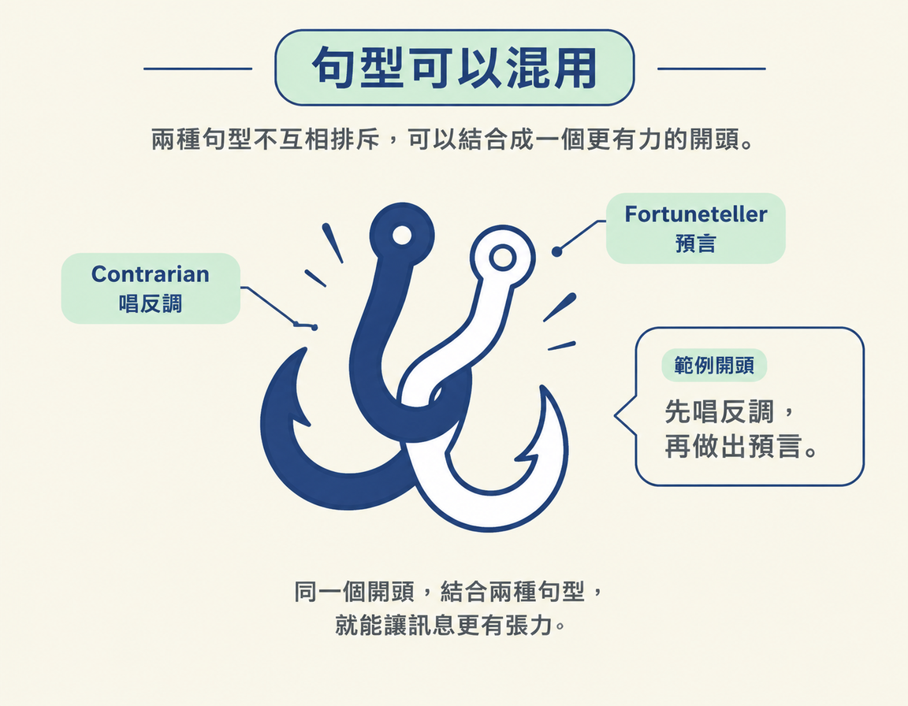

Hook（開頭的吸睛句）是貼文一開始用來抓住注意力的句子。前兩節已經說明 Hook 放在哪裡、為什麼重要。這一節整理九種句型，讓你從自己的內容出發，挑一種邏輯當開頭骨架，再把內容填進去。你會從這份清單中找到句型和例子，不必從空白頁開始想，也不用背下來。
認得九種 Hook 句型各自的邏輯，並能為每一種說出一個 AI 或非 AI 的例子。
下表列出每種句型的一句話定義，以及一個 AI／科技例子和一個非 AI 例子。例子取自課程示範的貼文，創作者名稱保留原文。
| 句型 | 一句話定義 | 例子（AI／科技） | 例子（非 AI） |
|---|---|---|---|
| Contrarian（唱反調） | 說出觀眾一直被告知的相反話 | Nate Herk：「Stop prompting Claude」，主張改用先寫 spec 的方式 | The Fitness Chef：「five diet trends that need to die」 |
| Investigator（調查） | 挖出大部分人都錯過的隱藏真相 | Nick Saraev：有人洩漏了 Claude 的完整 system prompt，超過 275,000 字元 | Bobby Parrish：「Here's why I would never buy ground beef at Aldi, and it's not for the reason you think」 |
| Teacher（教學） | 承諾修好一個觀眾早就知道自己有的問題 | Kevin Fremon：「I'm going to show you how you can build your very own AI Jarvis in under three minutes」 | Jeremy Ethier：用硬舉練背的教學 |
| Experimenter（實驗） | 自己試一件事，回來報告結果 | Tunde Alao 的 Fact or Hype 形式：試一個能把 side project 變成 launch video 的 Claude skill | Guga Foods 的食物實驗 |
| Fortuneteller（預言） | 說出接下來會發生什麼 | Brand Nat：「SaaS is now dead... the next trillion-dollar company will be...」 | Humphrey Yang：「if you have $100,000 invested by age 25...」 |
| Magician（魔術） | 用一個好到像不可能的成果停住滑動 | Riley Brown：OpenClaw 在 Mac Mini 上自己控制 Blender | Zach King：第一幀是刀放在兩支手機上，「is it cake or is it fake?」 |
| Curiosity Gap（好奇心缺口） | 在對方已知的知識上開一個缺口，然後先不補上 | Kevin Stratvert：「Don't tell your boss about this Excel trick」 | Mark Rober：「This is the craziest fact I know」 |
| Versus（對比） | 把兩樣東西並排，讓觀眾自己選一邊 | Jeff Su：把 ChatGPT、Gemini、Claude 依各自的「superpower」比一比 | Max the Meat Guy：讓五歲小孩選 $1 還是 $5 的義大利麵 |
| List（清單） | 承諾一組可以數得出來的收穫 | Greg Isenberg：「three Claude Code plugins that stop Claude from wasting tokens」 | Ali Abdaal：「three things I wish I knew before passive income」 |
課程網頁也把九種句型各自濃縮成一行定義，方便快速對照：
The contrarian: say the opposite of what your audience has been told
The investigator: dig into something and show what you found
The teacher: promise a clear lesson they'll walk away with
The experimenter: test something yourself and share the result
The fortuneteller: say what's coming next
The magician: show a result so good it looks impossible
The curiosity gap: tease something they need to know, then make them wait
The versus: put two things head to head
The list: promise a set number of things九種句型不是互相排斥的分類。課程示範 fortuneteller 時，Brand Nat 先用「SaaS is now dead」唱反調（contrarian），接著再做出預言，等於在同一個開頭裡混用兩種句型。熟悉之後，也可以慢慢發展出適合自己領域的句型。

課程列出九種句型的來源，以及各來源涵蓋的句型：
| 句型 | 出處 |
|---|---|
| Contrarian、Investigator、Teacher、Experimenter、Fortuneteller、Magician | Kane Kallaway 的「The 6 Hook Archetypes」 |
| Curiosity Gap、Versus | Colin and Samir 的「New Rules of YouTube」訪談（對象為 Paddy Galloway） |
| List | Alex Hormozi 的《$100M Leads》 |
九種 Hook 句型是一份開頭骨架清單：Contrarian（唱反調）、Investigator（調查）、Teacher（教學）、Experimenter（實驗）、Fortuneteller（預言）、Magician（魔術）、Curiosity Gap（好奇心缺口）、Versus（對比）與 List（清單）。每種句型都對應一種抓注意力的邏輯，並附有 AI／科技與非 AI 的例子。句型可以混用；來源包括 Kallaway 的六種原型、Colin and Samir 的 YouTube 訪談，以及 Hormozi 的《$100M Leads》。
這九種句型都用文字開場。下一頁會介紹另一種選擇：讓第一幀畫面自己抓住注意力，也就是 bonus 的視覺 Hook。